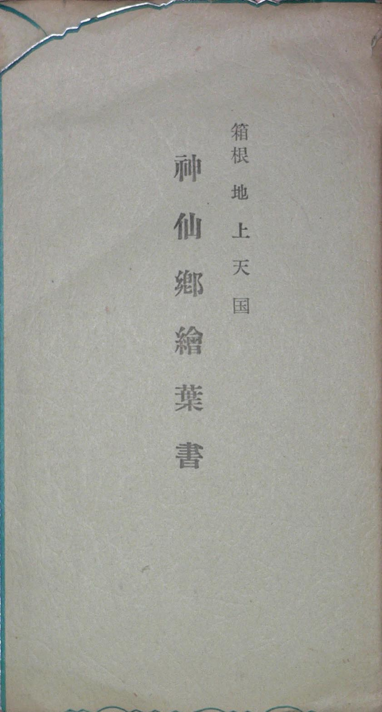
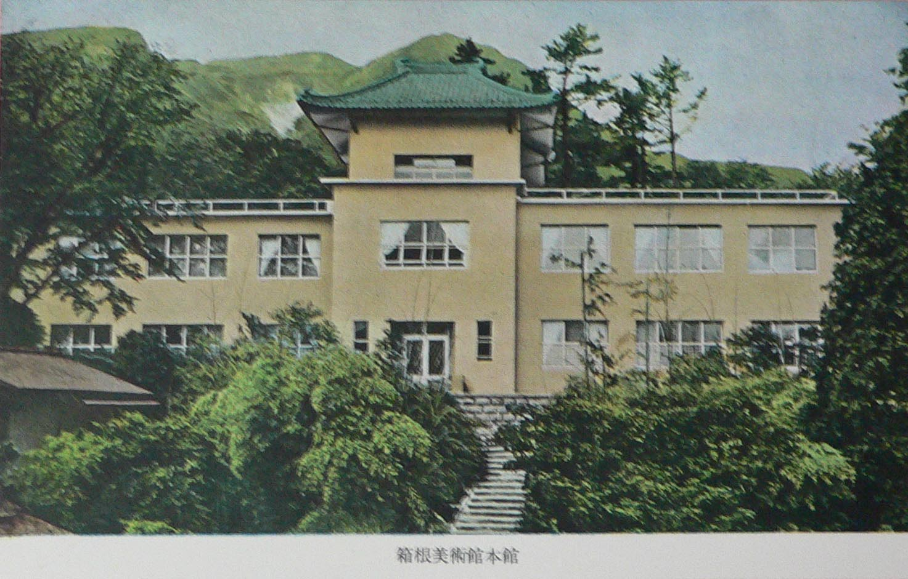
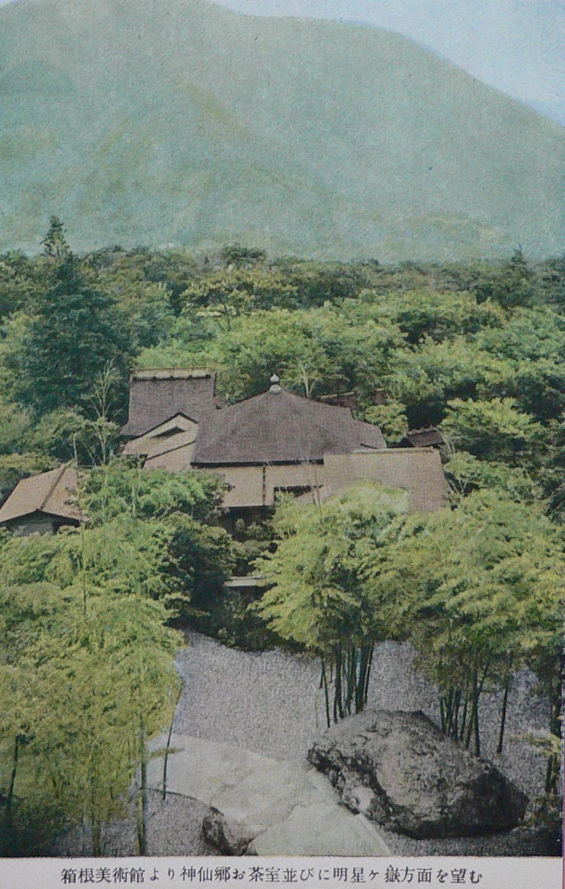
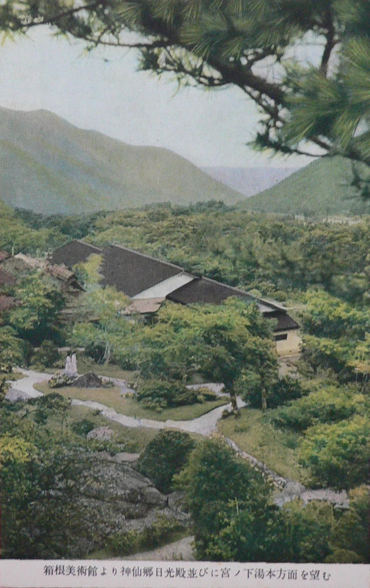
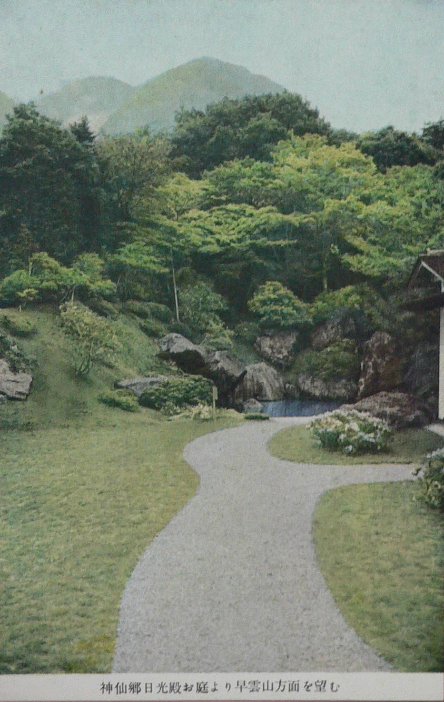

――― 岡
田 自 観 師 の 論 文 集 ――発行誌別
神仙郷絵葉書
 |
箱根地上天国 神仙郷絵葉書 カラー 四葉入り （正確な枚数は不明） 東京・大塚巧芸社調製 |
|||
 |
||
| 箱根美術館本館 | ||
 |
 |
 |
| 箱根美術館より神仙郷お茶室 並びに明星ケ嶽方面を望む |
箱根美術館より神仙郷日光殿 並びに宮ノ下湯本方面を望む |
神仙郷日光殿お庭より 早雲山方面を望む |